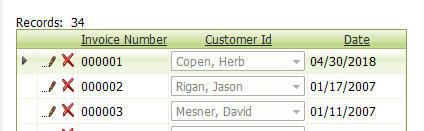

Grid Components
HTML Editor - Toolbar Buttons
The HTML editor now has two new buttons. The 'Toggle Source View' button toggles between a view showing HTML tags and the formatted view. The 'Insert Link' button allows you to insert a hyperlink into the text.
HTML Editor - Tab Key
The tab key now inserts 4 spaces into the text. Previously it tabbed out of the editor to the next control.Action Javascript - Comments
When you add a new action, you can now turn off the prompt for the action comment. This is useful if you rarely give a comment to each action you add. You can still add a comment later on by clicking the edit icon at the lower left of the dialog.Xdialog
When running a Grid component in an Xdialog, the genie that creates the Xdialog code now has new options:- Refresh parent window - if set to true does a topparent.resynch() to refresh the data in the parent form (if the Xdialog was launched from a button on a Form Layout). This is useful if the Grid component has edited the same record that the form is currently displaying.
- Prevent window close if Grid is dirty - prevent user from closing the Xdialog and losing unsaved Grid edits.
- Dirty Grid warning message - message to display if user tries to close the Xdialog window and the Grid has unsaved changes.
- OnWindowClose event - code to execute when the user closes the Xdialog window that contains the Grid component.
- CanWindowClose event - code to execute before the user closes the Xdialog window. If the function returns .f., then window will not be closed.

DropdownBox Control - Edit On Demand
Previously, in an editable Grid where the row editing mode was set to 'EditOnDemand' DropDownBox controls would render as Label controls when the row was NOT it edit mode. When you switched to edit mode, of course, the control would then render as a DropDownBox. Now, when you are NOT in edit mode the control renders as a disabled DropDownBox (as shown below). This is particular useful in the case where the DropDownBox stores a different value from the displayed value.